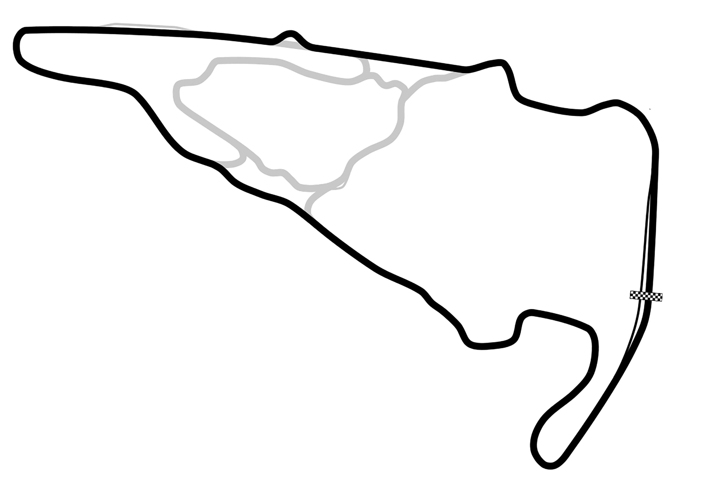

~!Motorsport!~
The corners of it that I pay attention to.
The track is VIR, the local(ish) track that isn't Richmond Raceway. In Alton, VA, near the border of NC, it is super super cool to go to and you can even drive on it yourself if you have the right equipment and enough money lol.

This was probably my introduction to this whole interest. It is the world's most popular, and features the fastest cars on an organic shaped racetrack, as opposed to oval or straight line lol. It's very prestigious and is a billion dollar business, with absolutely massively backed teams from big manufacturers (ex. Mercedes, Red Bull). Engineering and design is over half the workload, since every team designs their own car that adheres to the regulations set out by the FIA. Insane aerodynamics and 1000+ hp engines allow the cars to take 90 degree corners at 100+ mph at tracks across the globe. It's often considered the highest level a driver can reach.


IMSA has multiple championships within it, but their largest is a multi-class championship running prototypes and GT cars on track simultaneously. The highest level has car-manufacturer backed efforts like Porsche that produce bespoke hybrid prototype cars. The highest level cars can also be raced in the WEC series since they use the same formula. This is a North America specific series, mainly in America though.


WEC is a multi-class endurance series that races all over the world, featuring prototypes and GT cars. This series features one of the most prestigious events in motorsport, the 24 hours of Le Mans! Races range from 6-24 hours, so building a car that is reliable as well as fast is key. The top prototype class features cars designed team by team from manufacturers like Ferrari, Toyota, and recently Cadillac among others. These cars regulations are the same as IMSA's, allowing them to be raced in either series.


One of my favorite, kind of slept on, classes of racing, is GT, of which GT World Challenge and DTM are two major series featuring them. Souped up Porsche 911's, BMW M4's, Mercedes AMG's, Ferrari 296's, Lamborghini Huracans, and Audi R8's make up the majority of the participants. Due to their lower reliance on downforce, these cars can race very closely. Going side by side through multiple corners is a common occurence, and their BOP (balance of performance) ensures that the onus is more on the driver, rather than having a slow car compared to the rest of the field.


MotoGP is like the Formula 1 of motorcycle racing. I know the least about this series I would say, but due to the different handling characteristics of bikes to cars, the racing is very close, and at almost every corner you will see the rider lean the bike over 40 degrees towards the ground, and on tighter corners, lean angles can be as pronounced as 60 degrees, with the riders literal shoulders dragging the ground. It is a very physical form of motorsport due to all the body movement involved, and features big manufacturers like Ducati, Yamaha, and Honda among others making bikes from the ground up according to the rules and regulations.


Rally is cool because they drive on everything pretty much. Snow, rain, gravel, and regular paved roads are all conditions suitable for a rally car. Rallying uses timed point-to-point stages that add up to an overall competetitive time to determine where you place after the end of the rally. The WRC travels to 6 different continents, featuring modified road cars that are developed throughout the season.


I watch IndyCar good bit. Super interesting and close races, they even race on ovals and it is actually interesting and strategic. Their cars are difficult to drive, with no power steering or any other type of assistance. It's like Formula 1 with large wings, but they all race the same car, so the driver is more a determing factor. It is an American series, similar to IMSA, with one race in Toronto.


If I'm not in class and at home and not watching some sort of racing, there's a chance that I am playing a game about. Popular games include iRacing (very 2008 ik), Assetto Corsa, and Assetto Corsa Competizione to name a few, but each have different sets of cars and reasons to play. I have a wheel and cockpit with pedals and stuff so it's super nerdy but it's fun I swear.


I have only been lucky enough to go to the Virginia International Raceway and watch an IMSA race, but it is so awesome and highly recommend if you like watching, smelling, and listening to cars go fast around the perimeter of an organic shape. The photo is of my friend and I with the Michelin Man.